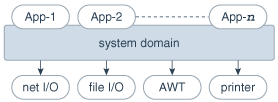

Java SE平台安全性架构
本文档概述了为JDK实现的主要安全功能的动机，描述了Java安全体系结构中的类，讨论了该体系结构对现有代码的影响，并给出了编写对安全敏感的代码的想法。
介绍
自从Java技术问世以来，人们对Java平台的安全性以及Java技术的部署引起的新安全性问题的兴趣日益浓厚。
从技术提供商的角度来看，Java安全性包括两个方面：
- 提供Java平台作为安全的，已构建好的平台，可以在该平台上以安全方式运行启用Java的应用程序。
- 提供以Java编程语言实现的安全工具和服务，这些安全工具和服务可启用范围更广的对安全敏感的应用程序，例如在企业界。
本文档讨论了与第一方面有关的问题，其中此类技术的客户包括将Java技术捆绑或嵌入其产品（例如浏览器和操作系统）的供应商。
原始沙箱模型
Java平台提供的原始安全模型称为沙盒模型，其存在是为了提供一个非常受限制的环境，在该环境中运行从开放网络获得的不受信任的代码。沙箱模型的本质是，可信任本地代码具有对重要系统资源（例如文件系统）的完全访问权限，而下载的远程代码（小程序）不受信任，并且只能访问沙箱内部提供的有限资源。下图说明了此沙箱模型。

沙盒模型是通过Java开发工具包（JDK）部署的，并且通常由使用JDK 1.0构建的应用程序采用，包括启用Java的Web浏览器。
总体安全性通过多种机制实施。首先，该语言被设计为类型安全且易于使用。希望的是，与使用其他编程语言（例如C或C ++）相比，减轻程序员负担的可能性很小。语言功能（例如自动内存管理，垃圾回收以及对字符串和数组的范围检查）是该语言如何帮助程序员编写安全代码的示例。
其次，编译器和字节码验证程序确保仅执行合法的Java字节码。字节码验证程序与Java虚拟机一起，可确保运行时的语言安全。
而且，类加载器定义了本地名称空间，该名称空间可用于确保不受信任的applet不会干扰其他程序的运行。
最后，对关键系统资源的访问由Java虚拟机进行调解，并由SecurityManager类预先检查，该类将一段不受信任的代码的操作限制在最低限度。
JDK 1.1引入了“签名小程序”的概念，如下图所示。在该发行版中，如果签名密钥被接收该小程序的最终系统识别为可信，则将经过正确数字签名的小程序视为可信的本地代码。签名的小程序及其签名以JAR（Java存档）格式交付。在JDK 1.1中，未签名的小程序仍在沙箱中运行。
不断发展的沙盒模型
下图所示的新Java SE平台安全性体系结构主要用于以下目的。

图示说明jssec_dt_032_anc9.eps
-
细粒度的访问控制。
此功能从一开始就存在于JDK中，但是要使用它，应用程序编写者必须进行大量编程（例如，通过子类化和自定义SecurityManager和ClassLoader类）。HotJava浏览器1.0就是这样的应用程序，因为它允许浏览器用户从少量不同的安全级别中进行选择。
但是，这种编程对安全性极为敏感，并且需要复杂的技能和对计算机安全性的深入了解。新的体系结构将使此练习更简单，更安全。
-
易于配置的安全策略。
再一次，此功能以前在JDK中存在，但不容易使用。而且，编写安全代码并不是一件容易的事，因此希望允许应用程序构建者和用户无需编程就可以配置安全策略。
-
易于扩展的访问控制结构。
直到JDK 1.1，为了创建新的访问权限，您必须添加一个新的
checkSecurityManager类的方法。新的体系结构允许键入权限（每个权限代表对系统资源的访问），并自动处理正确类型的所有权限（包括尚未定义的权限）。大多数情况下，不需要在SecurityManager类中创建新方法。（实际上，到目前为止，我们还没有遇到必须创建新方法的情况。） -
将安全检查扩展到所有Java程序，包括应用程序和小程序。
不再存在所有本地代码都受信任的内置概念。取而代之的是，对本地代码（例如，非系统代码，安装在本地文件系统上的应用程序包）进行与小应用程序相同的安全控制，尽管如果需要，也可以声明对本地代码（或远程）的策略代码）是最自由的，因此使此类代码能够以完全可信的方式有效运行。相同的原则适用于签名的applet和任何Java应用程序。
最后，一个隐含的目标是对安全类（包括SecurityManager和ClassLoader类）的设计进行内部调整，以减少在将来的编程中创建细微安全漏洞的风险。
保护机制–基本概念概述
现在，我们详细介绍新的保护体系结构，并简要说明其功能。我们首先概述新体系结构背后的基本概念。然后，我们以自然的顺序介绍主要的新类，首先是权限说明，然后是策略和相关功能，然后是访问控制及其用法，然后介绍安全的类加载和解析。
保护域是系统安全的基本概念和重要组成部分[Saltzer and Schroeder 75]。域可以通过委托人当前直接访问的对象集来确定范围，其中委托人是计算机系统中被授予权限（并因此赋予责任）的实体。JDK 1.0中使用的沙箱是具有固定边界的保护域的一个示例。
保护域的概念是一种方便的机制，用于在保护单元之间进行分组和隔离。例如，有可能（但尚未作为内置功能提供）将保护域彼此分离，以使任何允许的交互都必须通过受信任的系统代码或相关域的明确允许。请注意，现有对象可访问性规则在新的安全体系结构下仍然有效。
保护域通常分为两类：系统域和应用程序域。重要的是，只能通过系统域访问所有受保护的外部资源，例如文件系统，网络工具以及屏幕和键盘。下图说明了Java应用程序环境的域组成。
图示说明jssec_dt_028_anc2.eps
域从概念上封装了一组类，这些类的实例被授予相同的权限集。保护域由当前有效的策略确定。Java应用程序环境维护从代码（类和实例）到其保护域然后到其权限的映射，如下图所示。

图示说明jssec_dt_026_anc.eps
执行线程（通常但不一定与单个Java线程绑定，而又不一定与底层操作系统的线程概念绑定）可能完全在单个保护域内出现，或者可能涉及一个应用程序域以及系统域。例如，打印出消息的应用程序将必须与系统域进行交互，该系统域是对输出流的唯一访问点。在这种情况下，至关重要的是，在任何时候应用程序域都不能通过调用系统域来获得其他权限。否则，可能会带来严重的安全隐患。
在相反的情况下，系统域从应用程序域调用方法，例如当AWT系统域调用小程序的paint方法来显示小程序时，再次至关重要的是，任何时候有效的访问权限必须与当前的访问权限相同。在应用程序域中启用的权限。
换句话说，由于功能强大的域调用或被调用，功能较弱的域无法获得其他权限。
对涉及两个保护域的一个线程的讨论自然可以概括为遍历多个保护域的线程。以下是用于计算权限的简单而谨慎的经验法则：
- 执行线程的权限集被视为执行线程所遍历的所有保护域的权限的交集。
- 当一段代码调用doPrivileged方法（请参见下文）时，如果该代码的保护域以及所有直接或间接调用或输入的保护域允许的话，则认为执行线程的权限集包含一个权限。随后。
如您所见， doPrivileged方法使一段受信任的代码可以临时启用对比调用它的应用程序直接可用的资源更多的资源的访问。在某些情况下这是必要的。例如，可能不允许应用程序直接访问包含字体的文件，但是显示文档的系统实用程序必须代表用户获得这些字体。我们为系统域提供了doPrivileged方法来处理这种情况，并且该方法实际上适用于所有域。
在执行期间，当请求访问关键系统资源（例如文件I / O和网络I / O）时，资源处理代码直接或间接调用特殊的AccessController类方法，该方法评估请求并确定请求是否应被授予或拒绝。
这样的评估遵循并概括了上面给出的“经验法则”。进行评估的实际方式可能会因实施方式而异。基本原理是检查呼叫历史记录和授予相关保护域的权限，如果请求被批准，则静默返回，如果请求被拒绝，则抛出安全异常。
最后，每个域（系统或应用程序）也可以在其自己的域边界内对其内部资源实施额外的保护。例如，银行应用程序可能需要支持和保护内部概念，例如支票账户，存款和取款。由于这种保护的语义不太可能由JDK预测或强制执行，因此最好将此级别的保护系统留给系统或应用程序开发人员使用。但是，只要有适当的时候，我们就会提供有用的原语以简化开发人员的任务。SignedObject类就是这样的一种原语，我们将在后面描述其详细信息。
权限和安全政策
权限类别
权限类表示对系统资源的访问。java.security。权限类是一个抽象类，并根据需要进行子类化以表示特定的访问。
作为权限的示例，可以使用以下代码来产生读取名为以下文件的权限： abc在里面/tmp目录：
perm = new java.io.FilePermission("/tmp/abc", "read");
新权限可以从Permission类或其子类之一（例如java.security）中继承。基本权限 。子类权限（ BasicPermission除外 ）通常属于它们自己的包。因此，可以在java.io包中找到FilePermission 。
每个新的权限类别都需要实现的一种至关重要的抽象方法是implies方法。基本上，“ a意味着b”表示如果授予一个权限“ a”，则自然授予一个权限“ b”。在制定访问控制决策时，这一点很重要。
与抽象类java.security关联。Permission是名为java.security的抽象类。PermissionCollection和最终类java.security。权限 。
类java.security。PermissionCollection代表单个类别（例如文件权限）的Permission对象的集合（即，允许重复的集合），以便于分组。如果可以以任何顺序将权限添加到PermissionCollection对象中，例如文件权限，则至关重要的是， PermissionCollection对象必须确保在以下情况下遵循正确的语义： implies函数被调用。
类java.security。权限表示Permission对象的集合的集合，换句话说，是异构权限的超级集合。
应用程序可以自由添加系统支持的新权限类别。本文档后面将讨论如何添加此类特定于应用程序的权限。
现在，我们描述所有内置权限的语法和语义。
java.security。允许
这个抽象类是所有权限的始祖。它定义了所有权限所需的基本功能。
通常，通过将一个或多个字符串参数传递给构造函数来生成每个权限实例。在带有两个参数的常见情况下，第一个参数通常是“目标名称”（例如，权限所针对的文件的名称），第二个参数是操作（例如“ read”操作）在文件上）。通常，可以将一组动作一起指定为逗号分隔的复合字符串。
java.security。UnresolvedPermission
回想一下，安全策略的内部状态通常由与每个代码源关联的权限对象表示。但是，考虑到Java技术的动态性质，可能会在初始化策略时在Java应用程序环境中尚未加载和定义实现特定权限类的实际代码。例如，引用的权限类可能在JAR文件中，以后将被加载。
UnresolvedPermission类用于保存此类“未解决”权限。同样，类java.security。UnresolvedPermissionCollection存储UnresolvedPermission权限的集合。
在访问控制中，检查先前未解析但类型已加载的权限，此未解析的权限将被“解析”，并做出适当的访问控制决策。也就是说，如果可能，则根据UnresolvedPermission中的信息实例化适当类类型的新对象。此新对象替换了UnresolvedPermission ，后者已被删除。如果此时仍无法解析该权限，则该权限被视为无效，就好像从未在安全策略中授予该权限一样。
java.io。文件权限
可以通过以下方式指定此类的目标，其中目录名和文件名是不能包含空格的字符串。
file
directory (same as directory/)
directory/file
directory/* (all files in this directory)
* (all files in the current directory)
directory/- (all files in the file system under this directory)
- (all files in the file system under the current directory)
"<<ALL FILES>>" (all files in the file system)
注意<是表示系统中所有文件的特殊字符串。在Solaris，Linux或macOS系统上，这包括根目录下的所有文件。在Windows系统上，这包括所有驱动器上的所有文件。
这些动作是： 读取 ， 写入 ， 删除和执行 。因此，以下是用于创建文件权限的有效代码示例：
import java.io.FilePermission;
FilePermission p = new FilePermission("myfile", "read,write");
FilePermission p = new FilePermission("/home/gong/", "read");
FilePermission p = new FilePermission("/tmp/mytmp", "read,delete");
FilePermission p = new FilePermission("/bin/*", "execute");
FilePermission p = new FilePermission("*", "read");
FilePermission p = new FilePermission("/-", "read,execute");
FilePermission p = new FilePermission("-", "read,execute");
FilePermission p = new FilePermission("<<ALL FILES>>", "read");
的implies此类中的方法正确解释文件系统。例如， FilePermission("/-", "read,execute")暗示FilePermission("/home/gong/public_html/index.html", "read")和FilePermission("bin/*", "execute")暗示FilePermission("bin/emacs19.31", "execute") 。
注意：
这些字符串大多数以平台相关的格式给出。例如，代表对名为的文件的读取访问foo在里面temp目录在C Windows系统的驱动器，您将使用
FilePermission p = new FilePermission("c:\\temp\\foo", "read");
双反斜杠代表一个单反斜杠是必需的，因为字符串是由令牌化程序（ java.io.StreamTokenizer ），它允许\用作转义字符串（例如， \n以表示新行），因此需要两个反斜杠来表示单个反斜杠。令牌生成器处理完上述FilePermission目标字符串后，将双反斜杠转换为单反斜杠，最终结果是实际路径：
"c:\temp\foo"
在使用通用文件描述语言之前，必须以平台相关的格式给出字符串。另请注意，元符号的使用例如*和-防止使用特定的文件名。我们认为这是暂时可以容忍的小限制。最后，请注意-/和<与Solaris，Linux和macOS系统上的目标相同，因为它们都引用整个文件系统。（如果它们均可用，则它们可以引用多个文件系统）。在其他操作系统（例如Windows和macOS）上，这两个目标可能有所不同。
还要注意，目标名称仅指定目录，并带有“ read”操作，如
FilePermission p = new FilePermission("/home/gong/", "read");
表示您只授予列出该目录中文件的权限，而不读取其中的任何文件。要允许对文件的读取访问，必须指定一个显式文件名或一个*要么- ，如
FilePermission p = new FilePermission("/home/gong/myfile", "read");
FilePermission p = new FilePermission("/home/gong/*", "read");
FilePermission p = new FilePermission("/home/gong/-", "read");
最后，请注意，代码始终自动具有从其相同（URL）位置以及该位置的子目录读取文件的权限；它不需要显式权限即可这样做。
java.net。套接字权限
此类表示通过套接字访问网络。此类的目标可以指定为hostname:port_range ，在哪里hostname可以通过以下方式给出：
hostname (a single host)
IP address (a single host)
localhost (the local machine)
"" (equivalent to "localhost")
hostname.domain (a single host within the domain)
hostname.subdomain.domain
*.domain (all hosts in the domain)
*.subdomain.domain
* (all hosts)
也就是说，主机表示为DNS名称，数字IP地址， "localhost" （对于本地计算机）或"" （等同于指定"localhost" ）。
通配符*可以一次包含在DNS名称主机规范中。如果包含它，它必须位于最左侧，如*.sun.com 。
的port_range可以给出如下：
N (a single port)
N- (all ports numbered N and above)
-N (all ports numbered N and below)
N1-N2 (all ports between N1 and N2, inclusive)
这里N ， N1和N2是介于0到65535（2 16-1 ）之间的非负整数。
套接字上的动作是accept ， connect ， listen和resolve （基本上是DNS查找）。请注意，隐式地，“接受”，“连接”和“侦听”暗含了“解决”动作，即那些可以侦听或接受来自主机的传入连接或发起与主机的传出连接的人应该能够查找设置远程主机的名称。
以下是套接字权限的一些示例。
import java.net.SocketPermission;
SocketPermission p = new SocketPermission("java.example.com","accept");
p = new SocketPermission("192.0.2.99","accept");
p = new SocketPermission("*.com","connect");
p = new SocketPermission("*.example.com:80","accept");
p = new SocketPermission("*.example.com:-1023","accept");
p = new SocketPermission("*.example.com:1024-","connect");
p = new SocketPermission("java.example.com:8000-9000",
"connect,accept");
p = new SocketPermission("localhost:1024-",
"accept,connect,listen");
注意：
SocketPermission("java.example.com:80,8080","accept")和SocketPermission("java.example.com,javasun.example.com","accept" ）无效的套接字权限。
此外，由于侦听是仅适用于本地主机上的端口的操作，而接受是适用于本地和远程主机上的端口的操作，因此这两个操作都是必需的。
java.security。基本权限
BasicPermission类扩展了Permission类。它可以用作要遵循与BasicPermission相同的命名约定的权限的基类（请参见下文）。
BasicPermission的名称是给定权限的名称（例如，“ exitVM”，“ setFactory”，“ queuePrintJob”等）。命名约定遵循分层属性命名约定。星号可能会出现在名称的末尾，在“。”之后，或单独出现，表示通配符匹配。例如：“ java。*”或“ *”有效，“ * java”或“ a * b”无效。
操作字符串（继承自Permission ）未使用。因此， BasicPermission通常用作“命名”权限（包含名称但不包含操作列表的权限的基类；您具有命名权限，也没有。）如果需要，子类可以在BasicPermission之上实现操作。
一些BasicPermission子类是java.lang。RuntimePermission ， java.security。SecurityPermission ， java.util。PropertyPermission和java.net.NetPermission 。
java.util。财产许可
此类的目标基本上是在各种属性文件中设置的Java属性的名称。例子是java.home和os.name属性。可以将目标指定为“ *”（任何属性），“ a。*”（名称以“ a。”为前缀的任何属性），“ ab *”，等等。请注意，通配符只能出现一次，并且只能位于最右边的位置。
这是BasicPermission子类之一，关于BasicPermission的顶部工具的行为。动作是读写的。其含义定义如下：“读取”权限允许getProperty java.lang中的方法。调用系统以获取属性值，并且“写入”权限允许setProperty用来设置属性值的方法。
java.lang。运行时权限
RuntimePermission的目标可以用任何字符串表示，并且没有与目标关联的操作。例如， RuntimePermission("exitVM")表示退出Java虚拟机的权限。
目标名称是：
createClassLoader
getClassLoader
setContextClassLoader
setSecurityManager
createSecurityManager
exitVM
setFactory
setIO
modifyThread
stopThread
modifyThreadGroup
getProtectionDomain
readFileDescriptor
writeFileDescriptor
loadLibrary.{library name}
accessClassInPackage.{package name}
defineClassInPackage.{package name}
accessDeclaredMembers.{class name}
queuePrintJob
java.awt。AWTPermission
这与RuntimePermission具有相同的精神；这是没有操作的许可。此类的目标是：
accessClipboard
accessEventQueue
listenToAllAWTEvents
showWindowWithoutWarningBanner
java.net.NetPermission
此类包含以下目标，没有任何操作：
requestPasswordAuthentication
setDefaultAuthenticator
specifyStreamHandler
java.lang.reflect。ReflectPermission
这是反射操作的Permission类。ReflectPermission是一个命名权限（如RuntimePermission ），没有任何操作。当前定义的唯一名称是suppressAccessChecks ，它可以禁止标准的Java编程语言访问检查-对于公共，默认（程序包）访问，受保护和私有成员-由反射对象在使用时执行。
java.security。安全权限
SecurityPermissions控制对与安全性相关的对象的访问，例如Security ， Policy ， Provider ， Signer和Identity对象。此类包含以下目标，没有任何操作：
getPolicy
setPolicy
getProperty.{key}
setProperty.{key}
insertProvider.{provider name}
removeProvider.{provider name}
setSystemScope
setIdentityPublicKey
setIdentityInfo
printIdentity
addIdentityCertificate
removeIdentityCertificate
clearProviderProperties.{provider name}
putProviderProperty.{provider name}
removeProviderProperty.{provider name}
getSignerPrivateKey
setSignerKeyPair
java.security。AllPermission
此权限暗含所有权限。引入它是为了简化系统管理员的工作，他们可能需要执行需要所有（或众多）权限的多个任务。要求安全策略遍历所有权限将很不方便。请注意， AllPermission还暗含了将来定义的新权限。
显然，在考虑授予此权限时，必须非常谨慎。
javax.security.auth。AuthPermission
AuthPermission处理身份验证权限和与身份验证相关的对象，例如Subject ， SubjectDomainCombiner ， LoginContext和Configuration 。此类包含以下目标，没有任何操作：
doAs
doAsPrivileged
getSubject
getSubjectFromDomainCombiner
setReadOnly
modifyPrincipals
modifyPublicCredentials
modifyPrivateCredentials
refreshCredential
destroyCredential
createLoginContext.{name}
getLoginConfiguration
setLoginConfiguration
refreshLoginConfiguration
权限含义的讨论
回想一下，权限通常会相互比较，为了便于进行这种比较，我们要求每个权限类都定义一个implies表示特定权限类如何与其他权限类相关的方法。例如， java.io.FilePermission("/tmp/*", "read")暗示java.io.FilePermission("/tmp/a.txt", "read")但并不意味着任何java.net.NetPermission 。
对于某些读者而言，可能还没有立即意识到另一层含义。假设已授予一个小程序写入整个文件系统的权限。据推测，这可以使applet替换系统二进制文件，包括JVM运行时环境。这实际上意味着小程序已被授予所有权限。
另一个示例是，如果授予小应用程序运行时权限以创建类加载器，则它实际上被授予了更多权限，因为类加载器可以执行敏感操作。
其他“危险”的权限包括那些允许设置系统属性的权限，定义软件包和加载本机代码库的运行时权限（因为Java安全体系结构并非旨在并且不会在该级别阻止恶意行为）的本地代码），当然还有AllPermission 。
有关权限的更多信息，包括枚举分配特定权限的风险的表以及所有需要权限的JDK内置方法的表，请参见JDK中的Permissions 。
如何创建新的权限类型
至关重要的是，除Oracle外，任何人都不应通过添加新功能或通过将附加目标关键字引入类（例如java.lang）来扩展JDK内置的权限。RuntimePermission 。这样可以保持一致性。
要创建新的权限，建议执行以下步骤，如示例所示。假设ABC公司的应用程序开发人员想要创建一个自定义的“观看电视”权限。
首先，创建一个新类com.abc.Permission扩展了抽象类java.security。许可 （或其子类之一）和另一个新类com.abc.TVPermission扩展了com.abc。权限 。确保implies正确地实施了该方法。（当然， com.abc.TVPermission可以直接扩展java.security。许可 ;中间人com.abc.Permission不需要。）
public class com.abc.Permission extends java.security.Permission
public class com.abc.TVPermission extends com.abc.Permission
下图显示了子类关系。
其次，在应用程序包中包括这些新类。
每个想要为特定代码提供这种新型权限的用户都可以通过在策略文件中添加条目来实现。（有关策略文件语法的详细信息，请参见后面的部分。）来自的策略文件条目授予代码的示例http://example.com/观看第五频道的权限为：
grant codeBase "http://example.com/" {
permission com.abc.TVPermission "channel-5", "watch";
}
在应用程序的资源管理代码中，当检查是否应授予权限时，请调用AccessController的checkPermission使用方法com.abc.TVPermission对象作为参数。
com.abc.TVPermission tvperm = new
com.abc.TVPermission("channel-5", "watch");
AccessController.checkPermission(tvperm);
请注意，添加新权限时，应该创建一个新的（权限）类，而不要向安全管理器中添加新的方法。（过去，为了启用对新访问类型的检查，您必须向SecurityManager类添加新方法。）
如果再详细一点TVPermissions例如“ channel-1：13”或“ channel- *”，则可能有必要实施TVPermissionCollection知道如何处理这些伪名称的语义的对象。
新代码应始终通过以下方式调用权限检查： checkPermission AccessController类的方法，以便执行内置的访问控制算法。根本不需要检查是否存在ClassLoader或SecurityManager 。另一方面，如果算法应留给已安装的安全管理器类，则该方法SecurityManager.checkPermission应该改为调用。
java.security。代码源
此类扩展了HTML中代码库的概念，以不仅封装代码位置（URL），而且封装包含公共密钥的证书，这些证书应用于验证源自该位置的签名代码。请注意，这不等同于CodeBase HTML文件中的标签。每个证书都表示为java.security.cert。Certificate ，每个URL作为java.net。网址 。
java.security。政策
Java对象环境的系统安全策略由Policy对象表示，该策略指定哪些权限可用于来自各种来源的代码。更具体地，它是由一个策略子类提供的在Policy类的抽象方法的实现来表示。
为了允许小程序（或在SecurityManager上运行的应用程序）执行安全的操作，例如读取或写入文件，必须授予小程序（或应用程序）对该特定操作的许可。唯一的例外是，代码总是自动有权读取从其相同的CodeSource文件和CodeSource的子目录;它不需要显式权限即可这样做。
策略对象可能有多个实例，尽管在任何时候都只有一个实例“有效”。可以通过调用以下命令获取当前安装的Policy对象getPolicy方法，可以通过调用setPolicy方法（通过具有重置策略权限的代码）。
Policy对象使用的策略信息的源位置取决于Policy的实现。策略配置可以存储为例如纯ASCII文件， Policy类的序列化二进制文件或数据库。有一个策略参考实现，可从静态策略配置文件中获取其信息。
策略文件格式
在策略参考实现中，可以在一个或多个策略配置文件中指定策略。配置文件指示允许来自指定代码源的代码具有哪些权限。每个配置文件都必须使用UTF-8编码。
策略配置文件实质上包含条目列表。它可能包含一个密钥库条目，并且包含零个或多个授权条目。
密钥库是私钥及其相关的数字证书（例如X.509证书链）的数据库，这些证书对相应的公钥进行身份验证。的keytool实用程序用于创建和管理密钥库。在策略配置文件中指定的密钥库用于查找在文件的授权条目中指定的签名者的公钥。如果任何授权条目指定了签名者别名，或者任何授权条目指定了主体别名，则密钥库条目必须出现在策略配置文件中。
目前，策略文件中只能有一个密钥库条目（第一个之后的其他密钥库条目将被忽略），并且可以出现在文件的授权条目之外的任何位置。它具有以下语法：
keystore "some_keystore_url", "keystore_type";
这里， some_keystore_url指定密钥库的URL位置，并且keystore_type指定密钥库类型。后者是可选的。如果未指定，则假定类型为keystore.type安全属性文件中的属性。
URL是相对于策略文件位置的。因此，如果在安全属性文件中将策略文件指定为：
policy.url.1=http://foo.bar.example.com/blah/some.policy
并且该策略文件具有一个条目：
keystore ".keystore";
那么将从以下位置加载密钥库：
http://foo.bar.example.com/blah/.keystore
该URL也可以是绝对的。
密钥库类型定义了密钥库信息的存储和数据格式，以及用于保护密钥库中的私钥和密钥库本身完整性的算法。Oracle JDK的默认密钥库类型为PKCS12。
策略文件中的每个授予条目基本上都包含一个CodeSource及其权限。实际上， CodeSource由URL和一组证书组成，而策略文件条目则包括URL和签名者名称列表。在咨询密钥库以确定指定签名者的证书之后，系统会创建相应的CodeSource 。
策略文件中的每个授权条目均采用以下格式，其中前导grant是保留字，表示新条目的开头，可选项目出现在方括号中。在每个条目中， permission是另一个保留字，用于标记条目中新权限的开始。每个授予条目都会向指定的代码源和主体授予一组权限。
grant [SignedBy "signer_names"] [, CodeBase "URL"]
[, Principal [principal_class_name] "principal_name"]
[, Principal [principal_class_name] "principal_name"] ... {
permission permission_class_name [ "target_name" ]
[, "action"] [, SignedBy "signer_names"];
permission ...
};
在任何逗号之前或之后都允许有空格。权限类的名称必须是完全限定的类名称，例如java.io。FilePermission ，不能缩写（例如， FilePermission ）。
请注意，操作字段是可选的，因为如果权限类不需要它，则可以将其省略。如果存在，那么它必须紧接在目标字段之后。
CodeBase URL值的确切含义取决于末尾的字符。带有尾部“ /”的CodeBase匹配指定目录中的所有类文件（不是JAR文件）。带有尾部“ / *”的CodeBase匹配该目录中包含的所有文件（类和JAR文件）。带有尾部“ /-”的CodeBase匹配目录中的所有文件（类和JAR文件），并递归地匹配该目录中包含的子目录中的所有文件。
CodeBase字段（URL）是可选的，如果省略，则表示“任何代码库”。
第一个签名者名称字段是一个字符串别名，它通过单独的机制映射到与签名者关联的一组公共密钥（在密钥库中的证书内）。这些密钥用于验证某些签名类是否确实由这些签名者签名。
该签名者字段可以是逗号分隔的字符串，其中包含多个签名者的名称，例如Adam,Eve,Charles ，这意味着由亚当，夏娃和查尔斯签署（即关系是AND，而不是OR）。
该字段是可选的，因为如果省略该字段，则表示“任何签名者”，或者换句话说，“代码是否签名无关紧要”。
权限条目内的第二个签名者字段表示密钥库条目的别名，其中包含与用于签署实现所述权限类的字节码的私钥相对应的公钥。仅当字节码实现被验证为由所述别名正确签名时，此权限条目才有效（即，将基于该条目授予访问控制权限）。
主体值指定必须存在于执行线程主体集中的class_name / principal_name对。主体集通过主题与执行代码相关联。主体字段是可选的，因为如果省略它，则表示“任何主体”。
注意：
关于密钥库别名替换：如果将主体class_name / principal_name对指定为单引号字符串，则将其视为密钥库别名。向密钥库查询（通过别名）并查询X509证书。如果找到一个，则principal_class将被自动视为javax.security.auth.x500。X500Principal ，并且principal_name被自动视为证书中的主题可分辨名称。如果找不到X509证书映射，则忽略整个授予条目。
CodeBase，SignedBy和Principal字段之间的顺序无关紧要。
下面给出了用于策略文件格式的非正式BNF语法，其中非大写形式的术语是终止符：
PolicyFile -> PolicyEntry | PolicyEntry; PolicyFile
PolicyEntry -> grant {PermissionEntry}; |
grant SignerEntry {PermissionEntry} |
grant CodebaseEntry {PermissionEntry} |
grant PrincipalEntry {PermissionEntry} |
grant SignerEntry, CodebaseEntry {PermissionEntry} |
grant CodebaseEntry, SignerEntry {PermissionEntry} |
grant SignerEntry, PrincipalEntry {PermissionEntry} |
grant PrincipalEntry, SignerEntry {PermissionEntry} |
grant CodebaseEntry, PrincipalEntry {PermissionEntry} |
grant PrincipalEntry, CodebaseEntry {PermissionEntry} |
grant SignerEntry, CodebaseEntry, PrincipalEntry {PermissionEntry} |
grant CodebaseEntry, SignerEntry, PrincipalEntry {PermissionEntry} |
grant SignerEntry, PrincipalEntry, CodebaseEntry {PermissionEntry} |
grant CodebaseEntry, PrincipalEntry, SignerEntry {PermissionEntry} |
grant PrincipalEntry, CodebaseEntry, SignerEntry {PermissionEntry} |
grant PrincipalEntry, SignerEntry, CodebaseEntry {PermissionEntry} |
keystore "url"
SignerEntry -> signedby (a comma-separated list of strings)
CodebaseEntry -> codebase (a string representation of a URL)
PrincipalEntry -> OnePrincipal | OnePrincipal, PrincipalEntry
OnePrincipal -> principal [ principal_class_name ] "principal_name" (a principal)
PermissionEntry -> OnePermission | OnePermission PermissionEntry
OnePermission -> permission permission_class_name
[ "target_name" ] [, "action_list"]
[, SignerEntry];
现在我们举一些例子。以下政策授予权限a.b.Foo编码人签名Roland ：
grant signedBy "Roland" {
permission a.b.Foo;
};
以下代码向所有代码授予FilePermission （无论签名者和/或CodeBase如何）：
grant {
permission java.io.FilePermission ".tmp", "read";
};
下面的代码授予两个都签名的权限Li和Roland ：
grant signedBy "Roland,Li" {
permission java.io.FilePermission "/tmp/*", "read";
permission java.util.PropertyPermission "user.*";
};
以下内容授予对由签名的代码的两个权限Li那来自http://example.com ：
grant codeBase "http://example.com/*", signedBy "Li" {
permission java.io.FilePermission "/tmp/*", "read";
permission java.io.SocketPermission "*", "connect";
};
下面的代码授予两个都签名的权限Li和Roland ，并且仅当字节码实现时com.abc.TVPermission由以下人员真正签署Li 。
grant signedBy "Roland,Li" {
permission java.io.FilePermission "/tmp/*", "read";
permission com.abc.TVPermission "channel-5", "watch",
signedBy "Li";
};
包括第二个签名者字段的原因是为了防止在Java运行时安装中不存在权限类时进行欺骗。例如， com.abc.TVPermission可以将类下载为远程JAR存档的一部分，并且用户策略可能包含引用该类的条目。由于档案不是长期存在的，因此第二次com.abc.TVPermission该类可能是从其他网站下载的，因此第二个副本的真实性至关重要，因为用户策略中权限条目的存在可能反映了用户对类字节码的第一个副本的信心或信念。
我们选择使用数字签名来确保真实性，而不是存储字节码的第一个副本（哈希值）并将其与第二个副本进行比较的原因是因为权限类的作者可以合法地更新该类文件以反映新的设计或实现。
注意：
文件路径的字符串必须以平台相关的格式指定。在存在通用文件描述语言之前，这是必需的。上面的示例显示了适用于Solaris的字符串。在Windows上，当您直接在字符串中指定文件路径时，您需要为路径中的每个实际单个反斜杠包括两个反斜杠，如下所示：
grant signedBy "Roland" {
permission java.io.FilePermission "C:\\users\\Cathy\\*", "read";
};
这是因为字符串是由令牌处理程序（ java.io.StreamTokenizer ），它允许将“ \”用作转义字符串（例如，“ \ n”表示换行），因此需要两个反斜杠来表示单个反斜杠。令牌生成器处理完上述FilePermission目标字符串后，将双反斜杠转换为单反斜杠，最终结果是实际路径：
"C:\users\Cathy\*"
最后，这是一些基于主体的授权条目：
grant principal javax.security.auth.x500.X500Principal "cn=Alice" {
permission java.io.FilePermission "/home/Alice", "read, write";
};
这允许任何代码以X500Principal的身份执行， cn=Alice ，具有读写权限/home/Alice 。
以下示例显示了具有代码源和主体信息的Grant语句。
grant codebase "http://www.games.example.com",
signedBy "Duke",
principal javax.security.auth.x500.X500Principal "cn=Alice" {
permission java.io.FilePermission "/tmp/games", "read, write";
};
这允许从以下位置下载代码www.games.example.com ， 被...签名Duke ，并由执行cn=Alice ，允许读写/tmp/games目录。
以下示例显示了使用KeyStore别名替换的Grant语句：
keystore "http://foo.bar.example.com/blah/.keystore";
grant principal "alice" {
permission java.io.FilePermission "/tmp/games", "read, write";
};
alice将被javax.security.auth.x500代替。X500Principal cn=Alice假设与密钥库别名alice关联的X.509证书的主题专有名称为cn=Alice 。这允许X500Principal执行代码cn=Alice允许读写/tmp/games目录。
策略文件中的属性扩展
在策略文件和安全属性文件中可以进行属性扩展。属性扩展类似于在shell中扩展变量。也就是说，当一个字符串像${some.property}如果出现在策略文件或安全属性文件中，它将被展开为指定的系统属性的值。例如，
permission java.io.FilePermission "${user.home}", "read";
将扩大${user.home}使用的价值user.home系统属性。如果该属性的值为/home/cathy ，那么以上等同于
permission java.io.FilePermission "/home/cathy", "read";
为了协助独立于平台的策略文件，您还可以使用以下特殊符号： ${/} ，这是${file.separator} 。这允许权限指定，例如
permission java.io.FilePermission "${user.home}${/}*", "read";
如果user.home是/home/cathy ，而您在Solaris上，以上代码将转换为：
permission java.io.FilePermission "/home/cathy/*", "read";
另一方面user.home是C:\users\cathy并且您在Windows系统上，以上代码将转换为：
permission java.io.FilePermission "C:\users\cathy\*", "read";
另外，在特殊情况下，如果您在代码库中扩展属性，例如
grant codeBase "file:/${java.home}/lib/ext/"
然后任何file.separator字符将自动转换为斜杠（ / ），因为代码库是URL，所以这是理想的。因此，在Windows系统上，即使java.home被设定为C:\j2sdk1.2 ，以上将转换为
grant codeBase "file:/C:/j2sdk1.2/lib/ext/"
因此，您不需要使用${/}在代码库字符串中（您不应这样做）。
属性扩展发生在策略文件中允许双引号字符串的任何地方。这包括signedby ， codebase ，目标名称和操作字段。
是否允许属性扩展由的值控制policy.expandProperties安全属性文件中的属性。如果此安全属性的值为true（默认值），则允许扩展。
请注意：您不能使用嵌套属性；他们将无法正常工作。例如，
"${user.${foo}}"
不起作用，即使foo属性设置为home 。原因是属性解析器无法识别嵌套属性；它只是寻找第一个${ ，然后一直寻找，直到找到第一个}并尝试解释结果${user.$foo}作为属性，但是如果没有这样的属性，则失败。
另请注意：如果无法在授予条目，权限条目或密钥库条目中扩展属性，则将忽略该条目。例如，如果系统属性foo未定义，您有：
grant codeBase "${foo}" {
permission ...;
permission ...;
};
那么该授权条目中的所有权限都将被忽略。如果你有
grant {
permission Foo "${foo}";
permission Bar;
};
然后只有permission Foo "${foo}";条目将被忽略。最后，如果你有
keystore "${foo}";
那么密钥库条目将被忽略。
最后一点：在Windows系统上，当您直接在字符串中指定文件路径时，您需要为路径中的每个实际单个反斜杠包括两个反斜杠，如下所示：
"C:\\users\\cathy\\foo.bat"
这是因为字符串是由令牌处理程序（ java.io.StreamTokenizer ），它允许反斜杠（ \ ）用作转义字符串（例如， \n以表示新行），因此需要两个反斜杠来表示单个反斜杠。在标记化程序处理完上述字符串后，将双反斜杠转换为单反斜杠，最终结果是
"C:\users\cathy\foo.bat"
在标记程序处理完字符串后，将在字符串中扩展属性。因此，如果您有字符串
"${user.home}\\foo.bat"
然后，令牌处理程序首先处理字符串，将双反斜杠转换为单反斜杠，结果是
"${user.home}\foo.bat"
然后${user.home}属性被扩展，最终结果是
"C:\users\cathy\foo.bat"
假设user.home值是C:\users\cathy 。当然，为了平台独立性，最好是最初指定字符串时不使用任何明显的斜杠，即使用${/}属性，例如
"${user.home}${/}foo.bat"
策略文件中的常规扩展
策略文件中也支持通用形式的扩展。例如，权限名称可以包含以下形式的字符串： ${{protocol:protocol_data}}如果这样的字符串出现在权限名称中，则中的值protocol确定应发生的确切扩展类型，并protocol_data用于帮助执行扩展。 protocol_data可以为空，在这种情况下，上面的字符串应简单地采用以下形式：
${{protocol}}
默认策略文件实现中支持两种协议：
-
${{self}}协议
self，表示整个字符串的替换，${{self}}，具有一个或多个主体类/名称对。确切执行的替换取决于权限所属的Grant子句的内容。如果Grant子句不包含任何主体信息，则该权限将被忽略（权限包含
${{self}}目标名称中的“仅”在基于委托人的授予子句的上下文中有效）。例如，BarPermission在以下Grant子句中将始终被忽略：
如果Grant子句包含主体信息，grant codebase "www.foo.example.com", signedby "duke" { permission BarPermission "... ${{self}} ..."; };${{self}}将被替换为相同的主要信息。例如，${{self}}在BarPermission将被替换javax.security.auth.x500.X500Principal "cn=Duke"在以下Grant子句中：
如果Grant子句中有逗号分隔的主体列表，则grant principal javax.security.auth.x500.X500Principal "cn=Duke" { permission BarPermission "... ${{self}} ..."; };${{self}}将被相同的逗号分隔列表或主体替换。如果在Grant子句中通配了主体类和名称，${{self}}被替换为与Subject在当前AccessControlContext。下面的示例描述了一个场景
self和KeyStore别名替换一起：
在上面的示例中，“公爵”将首先扩展为keystore "http://foo.bar.example.com/blah/.keystore"; grant principal "duke" { permission BarPermission "... ${{self}} ..."; };javax.security.auth.x500.X500Principal "cn=Duke"假设与KeyStore别名关联的X.509证书，"duke"，其主题专有名称为"cn=Duke"。下一个，${{self}}将被替换为Grant子句中刚刚扩展的相同主体信息：javax.security.auth.x500.X500Principal "cn=Duke"。 -
${{alias:alias_name}}协议
alias，表示java.security。KeyStore别名替换。的KeyStore使用的是KeyStore条目中指定的那个；请参阅策略文件格式 。alias_name代表别名KeyStore。${{alias:alias_name}}被替换为javax.security.auth.x500.X500Principal "DN"，在哪里DN表示所属证书的主题专有名称alias_name。例如：
在上面的示例中，与别名关联的X.509证书，keystore "http://foo.bar.example.com/blah/.keystore"; grant codebase "www.foo.example.com" { permission BarPermission "... ${{alias:duke}} ..."; };duke，是从KeyStore，foo.bar.example.com/blah/.keystore。假设公爵的证书指定"o=dukeOrg, cn=duke"作为主题专有名称，然后${{alias:duke}}被替换为javax.security.auth.x500.X500Principal "o=dukeOrg, cn=duke"。在以下错误情况下，权限条目将被忽略：
- 密钥库条目未指定
- 的
alias_name没有提供 - 的证书
alias_name无法检索 - 检索到的证书不是X.509证书
分配权限
当委托人执行源自特定CodeSource的类时，安全性机制将查询策略对象以确定要授予的权限。这是通过调用getPermissions要么implies VM中安装的Policy对象上的方法。
显然， ProtectionDomain中的给定代码源可以匹配策略中多个条目中给定的代码源，例如，因为通配符（ * ） 被允许。
以下算法用于在策略中找到适当的权限集。
-
匹配公共密钥（如果代码已签名）。
-
如果策略中未识别到密钥，则忽略该密钥。
如果每个键都被忽略，则将代码视为未签名。
-
如果密钥匹配或未指定签名者，则尝试匹配密钥策略中的所有URL。
-
如果键匹配（或未指定签名者）且URL匹配（或未指定代码库），则尝试将策略中的所有主体与与当前执行线程关联的主体进行匹配。
-
如果密钥，URL或主体都不匹配，则使用内置的默认权限，即原始的沙箱权限。
策略条目codeBase URL值的确切含义取决于末尾的字符。带尾随的codeBase "/"匹配指定目录中的所有类文件（不是JAR文件）。带尾随的codeBase "/*"匹配该目录中包含的所有文件（类文件和JAR文件）。带尾随的codeBase "/-"匹配目录中的所有文件（类和JAR文件），并与该目录中包含的子目录中的所有文件递归匹配。
例如，给定"http://example.com/-"在策略中，则此网站上的任何代码库都与策略条目匹配。匹配的代码库包括"http://example.com/j2se/sdk/"和"http://example.com/people/gong/appl.jar" 。
如果匹配多个条目，则将授予这些条目中给定的所有权限。换句话说，权限分配是附加的。例如，如果用键A签名的代码获得权限X，而用键B签名的代码获得权限Y，并且未指定特定的代码库，则由A和B签名的代码都获得权限X和Y。类似地，如果使用codeBase的代码"http://example.com/-"被授予权限X，并且"http://example.com/people/* ”被授予Y权限，并且未指定特定的签署者，那么来自“ http://example.com/people/applet.jar”的小程序将同时获得X和Y。
请注意，此处的URL匹配纯粹是语法。例如，策略可以提供指定URL的条目"ftp://ftp.example.com" 。只有当人们可以直接从ftp获取Java代码以执行代码时，此类条目才有用。
要为本地文件系统指定URL，可以使用文件URL。例如，要在/home/cathy/temp您将使用Solaris系统中的目录
"file:/home/cathy/temp/*"
要在文件中指定文件temp Windows系统中C盘上的目录，使用
"file:/c:/temp/*"
注意：codeBase URL始终使用斜杠（没有反斜杠），而不管它们适用于什么平台。
您也可以使用绝对路径名，例如
"/home/gong/bin/MyWonderfulJava"
默认系统和用户策略文件
在策略参考实现中，可以在一个或多个策略配置文件中指定策略。配置文件指定允许来自指定代码源的代码的权限。可以通过简单的文本编辑器来组成策略文件。默认情况下，有一个系统范围的策略文件和一个用户策略文件。默认情况下，系统策略文件位于
{java.home}/conf/security/java.policy（基于UNIX的系统）{java.home}\conf\security\java.policy（视窗）
这里， java.home是一个系统属性，指定JDK的安装目录。默认情况下，用户策略文件位于
{user.home}/.java.policy（基于UNIX的系统）{user.home}\.java.policy（视窗）
这里， user.home是一个系统属性，用于指定用户的主目录。
初始化策略后，将首先加载系统策略，然后将用户策略添加到其中。如果两个策略都不存在，则使用内置策略。此内置策略与原始沙箱策略相同。策略文件的位置在安全属性文件中指定，该文件位于
{java.home}/conf/security/java.security（基于UNIX的系统）{java.home}\conf\security\java.security（视窗）
将策略文件位置指定为名称格式为以下属性的值：
policy.url.n
这里， n是一个数字。您可以按以下格式在一行中指定每个此类属性值：
policy.url.n=URL
这里， URL是URL规范。例如，默认系统和用户策略文件在安全属性文件中定义为
policy.url.1=file:${java.home}/conf/security/java.policy
policy.url.2=file:${user.home}/.java.policy
实际上，您可以指定许多URL，包括形式为“ http：//”的URL，所有指定的策略文件都将被加载。您也可以注释掉或更改第二个注释以禁用读取默认用户策略文件。
该算法开始于policy.url.1 ，并一直递增，直到找不到URL。因此，如果你有policy.url.1和policy.url.3 ， policy.url.3将永远不会被读取。
调用应用程序执行时，还可以指定其他或不同的策略文件。这可以通过-Djava.security.policy命令行参数，用于设置java.security.policy属性。例如，考虑以下示例：
java -Djava.security.manager -Djava.security.policy=pURL SomeApp
这里， pURL是一个URL，它指定策略文件的位置，然后除安全属性文件中指定的所有策略文件外，还将加载指定的策略文件。（ -Djava.security.manager参数确保安装了默认的安全管理器，从而对应用程序进行策略检查，如“ 管理小程序和应用程序”中所述 。如果应用程序则不需要SomeApp安装安全管理器。）
如果使用以下命令，并使用双等号，则将仅使用指定的策略文件；否则，将使用默认策略文件。所有其他人将被忽略。
java -Djava.security.manager -Djava.security.policy==pURL SomeApp
注意：
的-Djava.security.policy策略文件值将被忽略（对于两者java和appletviewer命令），如果policy.allowSystemProperty安全属性文件中的property属性设置为false。默认值为true。
定制政策评估
Policy类的当前设计并不像可能的那样全面。我们已经对问题进行了深思熟虑，并且正在谨慎地进行研究，部分目的是确保我们定义适合最常见情况的方法调用。同时，只要前者是抽象Policy类的子类并实现该策略类，则可以提供替代策略类来替代默认策略类。 getPermissions方法（以及其他必要的方法）。
政策参考实现可以通过重置安全属性文件中policy.provider安全属性的值（被改变，
安全财产policy.provider指定策略类的名称，默认值为以下内容：
policy.provider=sun.security.provider.PolicyFile
要进行自定义，您可以更改属性值以指定另一个类，如
policy.provider=com.mycom.MyPolicy
请注意， MyPolicy类必须是java.security的子类。政策 。可能值得强调的是，对策略类的这种覆盖是一个临时解决方案，而更全面的策略API可能会使其不必要。
java.security。GeneralSecurityException
这是一个异常类，它是java.lang的子类。例外 。目的是应该存在与安全性和安全性软件包相关联的两种类型的异常。
-
java.lang。SecurityException及其子类应该是可能导致程序执行停止的运行时异常（未经检查，未声明）。
仅当检测到某种类型的安全冲突时，才会引发此类异常。例如，当某些代码尝试访问文件时抛出了这样的异常，但是它没有访问权限。如果需要，应用程序开发人员可以捕获这些异常。
-
java.security。GeneralSecurityException ，它是java.lang的子类。在所有其他情况下，从安全包中引发的异常 （必须声明或捕获）。
这种例外与安全有关，但并非至关重要。例如，传递无效密钥可能不是安全违规，应该由开发人员捕获并处理。
当前， java.security包中仍然存在两个例外，它们是RuntimeException的子类。由于向后兼容性要求，我们目前无法更改这些设置。将来，我们将重新讨论该问题。
访问控制机制和算法
java.security。保护域
ProtectionDomain类封装域的特征。这样的域包含一组类，这些类的实例在代表给定的Principal组执行时被授予一组权限。
一个ProtectionDomain由一个CodeSource ，一个ClassLoader ，一个Principal数组以及一个Permissions集合构成。CodeSource封装了代码库（ java.net。此域中所有类的URL ）以及一组证书（类型为java.security.cert）。证书 ），用于与签署此域中所有代码的私钥相对应的公钥。Principal代表正在运行代码的用户。
无论执行有效的策略如何，在ProtectionDomain构造时传递的权限代表绑定到域的一组静态权限。随后，在每次安全检查期间， ProtectionDomain都会参考当前策略以检索授予域的动态权限。
来自不同CodeSource的类或代表不同主体执行的类属于不同的域。
今天，作为JDK的一部分提供的所有代码都被视为系统代码，并在唯一的系统域中运行。每个小程序或应用程序都在由策略确定的适当域中运行。
可以确保任何非系统域中的对象都不能自动发现另一个非系统域中的对象。可以通过仔细的类解析和加载来实现此分区，例如，对不同的域使用不同的类加载器。但是， SecureClassLoader （或其子类）可以选择从不同的域加载类，从而允许这些类在相同的名称空间（由类加载器划分）中共存。
java.security。存取控制器
AccessController类用于三个目的，下面各节将进一步详细描述每个目的：
- 根据当前有效的安全策略，决定是允许还是拒绝对关键系统资源的访问，
- 将代码标记为“特权”，从而影响随后的访问确定，以及
- 获取当前调用上下文的“快照”，以便可以针对保存的上下文从其他上下文中做出访问控制决策。
如果任何控制系统资源访问的代码希望使用特定的安全模型和这些方法所使用的访问控制算法，则应调用AccessController方法。另一方面，如果应用程序希望将安全模型推迟到运行时安装的SecurityManager的模型，则应改为调用SecurityManager类中的相应方法。
例如，调用访问控制的典型方法是以下代码（摘自JDK的早期版本）：
ClassLoader loader = this.getClass().getClassLoader();
if (loader != null) {
SecurityManager security = System.getSecurityManager();
if (security != null) {
security.checkRead("path/file");
}
}
在当前架构下，通常应调用检查是否存在与调用类关联的类加载器。可能很简单，例如：
FilePermission perm = new FilePermission("path/file", "read");
AccessController.checkPermission(perm);
AccessController checkPermission方法检查当前执行上下文并就是否允许请求的访问做出正确的决定。如果是这样，此检查将安静地返回。否则，出现AccessControlException （ java.lang的子类。抛出SecurityException ）。
请注意，在某些情况下，例如在某些浏览器中，是否安装了SecurityManager表示一种或另一种安全状态可能会导致采取不同的操作。为了向后兼容， checkPermission可以使用SecurityManager上的方法。
SecurityManager security = System.getSecurityManager();
if (security != null) {
FilePermission perm = new FilePermission("path/file", "read");
security.checkPermission(perm);
}
我们目前不改变SecurityManager使用的这一方面，但是会鼓励应用程序开发人员在适当的内置访问控制算法时，在将来的编程中使用JDK中引入的新技术。
SecurityManager的默认行为checkPermission方法实际上是调用AccessController checkPermission方法。不同的SecurityManager实现可以实现自己的安全管理方法，可能包括添加其他约束，以用于确定是否允许访问。
权限检查算法
假设访问控制检查发生在具有多个调用程序链的计算线程中（将其视为跨越保护域边界的多个方法调用），如下图所示。
当。。。的时候checkPermission最近调用者（例如File类中的方法）调用AccessController的方法，用于确定是允许还是拒绝所请求的访问的基本算法如下。
如果呼叫链中的任何呼叫者都不具有请求的许可权，则将抛出AccessControlException ，除非满足以下条件-为其域授予许可的呼叫者将该许可权标记为“特权”（请参见下一节），随后所有各方此调用者（直接或间接）调用的所有对象均具有上述许可。
显然有两种实施策略：
-
在“紧急评估”实现中，每当线程进入一个新的保护域或从一个线程退出时，有效许可权集都会动态更新。
这样做的好处是简化了检查是否允许权限的过程，并且在许多情况下可以更快。缺点是，由于权限检查的发生频率比跨域调用要低得多，因此很大一部分权限更新可能是无用的工作。
-
在“惰性评估”实现中，每当请求权限检查时，都会检查线程状态（由当前状态反映，包括当前线程的调用堆栈或其等效项），并做出拒绝或授予特定访问权限的决定要求。
这种方法的一个潜在缺点是权限检查时的性能损失，尽管这种损失无论如何都将在“渴望评估”方法中发生（尽管在较早的时间并在每个跨域调用中扩展）。到目前为止，我们的实施已产生可接受的性能，因此，我们认为惰性评估是总体上最经济的方法。
因此，用于检查许可的算法当前被实现为“惰性评估”。假设当前线程遍历m个调用者，从调用者1到调用者2到调用者的顺序m 。然后，呼叫者m调用了checkPermission方法。基本算法checkPermission用于确定是授予访问权限还是拒绝访问权限的方法如下（有关详细信息，请参见后续部分）：
for (int i = m; i > 0; i--) {
if (caller i's domain does not have the permission)
throw AccessControlException
else if (caller i is marked as privileged) {
if (a context was specified in the call to doPrivileged)
context.checkPermission(permission)
if (limited permissions were specified in the call to doPrivileged) {
for (each limited permission) {
if (the limited permission implies the requested permission)
return;
}
} else
return;
}
}
// Next, check the context inherited when the thread was created.
// Whenever a new thread is created, the AccessControlContext at
// that time is stored and associated with the new thread, as the
// "inherited" context.
inheritedContext.checkPermission(permission);
处理特权
静态方法AccessController class允许类实例中的代码通知AccessController它的代码主体是“特权的”，因为它是负责请求访问其可用资源的，而不管是什么代码引起的。
也就是说，呼叫者在呼叫呼叫者时可以将其标记为“特权” doPrivileged方法。在做出访问控制决策时， checkPermission方法会停止检查它是否通过以下方式到达被标记为“特权”的呼叫者doPrivileged不带上下文参数的调用（有关上下文参数的信息，请参见下一部分）。如果该呼叫者的域具有指定的权限，则不会进行进一步检查，并且checkPermission安静地返回，指示允许所请求的访问。如果该域没有指定的权限，则照常抛出异常。
“特权”功能的常规用法如下：
如果您不需要从“特权”块中返回值，请执行以下操作：
somemethod() {
...normal code here...
AccessController.doPrivileged(new PrivilegedAction() {
public Object run() {
// privileged code goes here, for example:
System.loadLibrary("awt");
return null; // nothing to return
}
});
...normal code here...
}
PrivilegedAction是具有单个方法的接口，名为run ，返回一个Object。上面的示例显示了实现该接口的匿名内部类的创建；具体的实现run提供了方法。当来电doPrivileged制成后， PrivilegedAction实现传递给它。的doPrivileged方法调用run的方法PrivilegedAction启用特权后执行，并返回run方法的返回值作为doPrivileged返回值，在此示例中将其忽略。（有关内部类的更多信息，请参见Java教程中的嵌套类 。
如果需要返回值，可以执行以下操作：
somemethod() {
...normal code here...
String user = (String) AccessController.doPrivileged(
new PrivilegedAction() {
public Object run() {
return System.getProperty("user.name");
}
}
);
...normal code here...
}
如果操作在您的run方法可能会引发“已检查”异常（ throws方法的子句），那么您需要使用PrivilegedExceptionAction接口而不是PrivilegedAction接口：
somemethod() throws FileNotFoundException {
...normal code here...
try {
FileInputStream fis = (FileInputStream)
AccessController.doPrivileged(
new PrivilegedExceptionAction() {
public Object run() throws FileNotFoundException {
return new FileInputStream("someFile");
}
}
);
} catch (PrivilegedActionException e) {
// e.getException() should be an instance of
// FileNotFoundException,
// as only "checked" exceptions will be "wrapped" in a
// <code>PrivilegedActionException</code>.
throw (FileNotFoundException) e.getException();
}
...normal code here...
}
有关特权的一些重要要点：首先，此概念仅存在于单个线程中。一旦特权代码完成，就可以保证特权被擦除或撤销。
其次，在此示例中， run方法是特权的。但是，如果调用的可信任度较低的代码特权较少，那么该代码将不会获得任何特权。仅当特权代码具有此权限时，才授予权限，直到调用链为止，调用链中的所有后续调用者也是如此。 checkPermission呼叫。
AccessController.doPrivileged的一个变体使代码可以声明其特权的子集，而不会阻止整个堆栈的遍历以检查其他权限。请参见声明特权的子集 。
有关将代码标记为“特权”的更多信息，请参见附录A：特权块的API 。
访问控制上下文的继承
当线程创建新线程时，将创建新堆栈。如果在创建此新线程时未保留当前的安全上下文，则当AccessController.checkPermission如果在新线程内部调用该线程，则将仅基于新线程的上下文（而不考虑父线程的上下文）来做出安全决策。
干净的堆栈问题本身并不是安全问题，但是会使安全代码（尤其是系统代码）的编写更容易出现细微的错误。例如，非专家开发人员可能会相当合理地假设子线程（例如，一个不涉及不受信任的代码的线程）从父线程（例如，一个涉及不信任的代码的线程）继承相同的安全上下文。如果实际上没有保存父上下文，那么当从新线程内部访问受控资源（然后将资源传递给不太受信任的代码）时，这将导致意外的安全漏洞。
因此，在创建新线程时，我们实际上确保（通过线程创建和其他代码）它在创建子线程时会自动继承父线程的安全上下文，以确保后续操作checkPermission子线程中的调用将考虑继承的父上下文。
换句话说，逻辑线程上下文被扩展为包括父上下文（以AccessControlContext的形式，在下一节中描述）和当前上下文，并且用于检查权限的算法也扩展为以下内容。（回想起，有m个呼叫者checkPermission ，请参阅下一节以获取有关AccessControlContext的信息。 checkPermission方法。）
for (int i = m; i > 0; i--) {
if (caller i's domain does not have the permission)
throw AccessControlException
else if (caller i is marked as privileged) {
if (a context was specified in the call to doPrivileged)
context.checkPermission(permission)
if (limited permissions were specified in the call to doPrivileged) {
for (each limited permission) {
if (the limited permission implies the requested permission)
return;
}
} else
return;
}
}
// Next, check the context inherited when the thread was created.
// Whenever a new thread is created, the AccessControlContext at
// that time is stored and associated with the new thread, as the
// "inherited" context.
inheritedContext.checkPermission(permission);
请注意，此继承是可传递的，因此，例如，孙子从父辈和祖父母那里都继承。还要注意，继承的上下文快照是在创建新的子项时获取的，而不是在首次运行该子项时获取的。继承功能没有公共API更改。
java.security。AccessControlContext
回想一下AccessController checkPermission方法在当前执行线程的上下文（包括继承的上下文）内执行安全检查。当这种安全检查只能在不同的上下文中进行时，就会出现困难。也就是说，有时实际上应该在不同的上下文中完成应在给定上下文中进行的安全检查。例如，当一个线程向另一个线程发布事件时，如果服务请求访问控制器资源，则为请求事件提供服务的第二个线程将没有适当的上下文来完成访问控制。
为了解决这个问题，我们提供了AccessController getContext方法和AccessControlContext类。的getContext方法获取当前调用上下文的“快照”，并将其放置在AccessControlContext对象中，并返回该对象。以下是一个示例调用：
AccessControlContext acc = AccessController.getContext();
此上下文捕获相关信息，以便可以通过从其他上下文中对照此上下文信息进行检查来做出访问控制决策。例如，一个线程可以将请求事件发布到第二个线程，同时还提供此上下文信息。AccessControlContext本身有一个checkPermission根据封装的上下文（而不是当前执行线程的上下文）制定访问决策的方法。因此，如果需要，第二个线程可以通过调用以下命令来执行适当的安全检查：
acc.checkPermission(permission);
上面的方法调用等效于在第一个线程的上下文中执行相同的安全性检查，即使它是在第二个线程中完成的。
在某些情况下，必须根据访问控制上下文检查一个或多个权限，但不清楚先验要检查哪些权限。在这些情况下，您可以使用doPrivileged需要上下文的方法：
somemethod() {
AccessController.doPrivileged(new PrivilegedAction() {
public Object run() {
// Code goes here. Any permission checks from
// this point forward require both the current
// context and the snapshot's context to have
// the desired permission.
}
});
...normal code here...
现在， AccessController使用的完整算法checkPermission可以给出方法。假设当前线程已遍历m呼叫者，按呼叫者1到呼叫者2到呼叫者的顺序m 。然后来电m调用了checkPermission方法。算法checkPermission用于确定是授予访问权限还是拒绝访问权限，如下所示
for (int i = m; i > 0; i--) {
if (caller i's domain does not have the permission)
throw AccessControlException
else if (caller i is marked as privileged) {
if (a context was specified in the call to doPrivileged)
context.checkPermission(permission)
if (limited permissions were specified in the call to doPrivileged) {
for (each limited permission) {
if (the limited permission implies the requested permission)
return;
}
} else
return;
}
}
// Next, check the context inherited when the thread was created.
// Whenever a new thread is created, the AccessControlContext at
// that time is stored and associated with the new thread, as the
// "inherited" context.
inheritedContext.checkPermission(permission);
安全的类加载
动态类加载是Java虚拟机的重要功能，因为它为Java平台提供了在运行时安装软件组件的能力。它具有许多独特的特征。首先，延迟加载是指按需且在可能的最后时刻加载类。其次，动态类加载通过添加链接时检查来维护Java虚拟机的类型安全，链接时检查代替某些运行时检查并且仅执行一次。此外，程序员可以定义自己的类加载器，例如，指定从中加载某些类的远程位置，或为其分配适当的安全属性。最后，类加载器可用于为各种软件组件提供单独的名称空间。例如，浏览器可以使用单独的类加载器从不同的网页加载小应用程序，从而在这些小应用程序类之间保持一定的隔离度。实际上，这些小程序可以包含相同名称的类-Java虚拟机将这些类视为不同的类型。
类加载机制不仅对于Java编程语言的动态本质至关重要。它在提供安全性方面也起着至关重要的作用，因为类加载器负责查找和获取类文件，咨询安全策略并使用适当的权限定义类对象。
类加载器类层次结构
加载类时，由于一个Java虚拟机中可以有多个类加载器对象实例，因此一个重要的问题是我们如何确定要使用哪个类加载器。JDK引入了多个具有不同属性的类加载器，因此，另一个重要的问题是我们应该使用哪种类型的类加载器。
类加载器类层次结构的根是一个名为java.lang的抽象类。ClassLoader 。类java.security。SecureClassLoader是抽象ClassLoader类的子类和具体实现。类java.net。URLClassLoader是SecureClassLoader的子类。
创建自定义类加载器类时，可以根据自定义类加载器的特定需求，从上述任何类加载器类中继承子类。
原始类加载器
因为每个类都由其类加载器加载，并且每个类加载器本身是一个类，并且必须由另一个类加载器加载，所以我们似乎遇到了明显的“鸡与蛋”问题，即，第一个类加载器来自哪里？ ？有一个“原始”类加载器，它会引导类加载过程。原始类加载器通常是用本机语言（例如C）编写的，并且不会在Java上下文中体现出来。原始类加载器通常以平台相关的方式从本地文件系统加载类。
某些类，例如java。*包中定义的类，对于Java虚拟机和运行时系统的正确运行必不可少。它们通常被称为基类。由于历史原因，所有此类都具有一个为null的类加载器。这个空类加载器也许是原始类加载器存在的唯一标志。实际上，将空类加载器简单地视为原始类加载器更为容易。
给定一个Java应用程序环境中的所有类，我们可以轻松地形成一个类加载树以反映类加载关系。不是类加载器的每个类都是叶节点。每个类的父节点是其类加载器，空类加载器是根类。这样的结构是一棵树，因为不可能有循环-类加载器不能加载自己的祖先类加载器。
类加载器委托
当一个类加载器被要求加载一个类时，该类加载器要么加载类本身，要么可以要求另一类加载器这样做。换句话说，第一类加载器可以委派给第二类加载器。从某种意义上说，委托关系是虚拟的，它与哪个类加载器加载哪个其他类加载器无关。而是在创建类加载器对象时以父子关系的形式形成委托关系。但是，系统类加载器是所有类加载器的委托根祖先。必须注意确保委派关系不包含周期。否则，委派过程可能会陷入无限循环。
类解析算法
用于加载类的JDK ClassLoader方法的默认实现按以下顺序搜索类：
- 检查该类是否已经加载。
- 如果当前类加载器具有指定的委托父级，则委托给父级以尝试加载此类。如果没有父代，则委托给原始类加载器。
- 调用可自定义的方法以在其他位置找到该类。
在这里，第一步是查看类加载器的本地缓存（或其等效功能，例如全局缓存），以查看加载的类是否与目标类匹配。最后一步提供了一种自定义查找类的机制的方法。因此，自定义类加载器可以重写此方法以指定应如何查找类。例如，小应用程序类加载器可以重写此方法以返回小应用程序主机，并尝试查找类文件并通过网络将其加载。
如果在任何步骤都找到了一个类，则将其返回。如果使用上述步骤未找到该类，则抛出ClassNotFound异常。
请注意，对于同一类型的安全而言，同一个类加载器不能多次加载同一个类是至关重要的。如果该类不在已加载的类中，则当前的类加载器尝试将任务委托给父类加载器。这可以递归发生。这样可以确保使用适当的类加载器。例如，当定位系统类时，委托过程将继续进行，直到到达系统类加载器为止。
我们之前已经看过委托算法。但是，给定任何类的名称，在尝试加载该类时，我们应该从哪个类加载器开始？确定类加载器的规则如下：
- 加载应用程序的第一类时，将使用URLClassLoader的新实例。
- 加载applet的第一类时，将使用AppletClassLoader的新实例。
- 当java.lang。类。直接调用ForName ，使用原始类加载器。
- 如果加载类的请求是由现有类对它的引用触发的，则要求现有类的类加载器加载该类。
请注意，有关使用URLClassLoader和AppletClassLoader实例的规则有例外，并且会根据特定的系统环境而有所不同。例如，Web浏览器可以选择重用现有的AppletClassLoader来从同一网页加载applet类。
由于类加载器的强大功能，我们严格限制了可以创建类加载器实例的人员。另一方面，希望为应用程序或小程序提供一种方便的机制，以指定URL位置并从中加载类。我们提供静态方法，以允许任何程序创建URLClassLoader类的实例，尽管其他类型的类加载器则不允许。
安全管理
管理小程序和应用程序
当前，所有JDK系统代码都调用SecurityManager方法来检查当前有效的策略并执行访问控制检查。每当运行小程序时，通常都会安装一个安全管理器（ SecurityManager实现）。 appletviewer和大多数浏览器都安装了安全管理器。
运行应用程序时不会自动安装安全管理器。要将与下载的applet相同的安全策略应用于在本地文件系统上找到的应用程序，运行该应用程序的用户必须使用以下命令调用Java虚拟机： -Djava.security.manager命令行参数（用于设置java.security.manager财产），例如
java -Djava.security.manager SomeApp
否则应用程序本身必须调用setSecurityManager java.lang中的方法。安装安全管理器的系统类。
通过遵循以下命令，可以在命令行上指定要使用的特定安全管理器-Djava.security.manager带有等于和等于要用作安全管理器的类的名称，例如
java -Djava.security.manager=COM.abc.MySecMgr SomeApp
如果未指定安全管理器，则使用内置的默认安全管理器（除非应用程序安装其他安全管理器）。以下所有内容都是等效的，并导致使用默认的安全管理器：
java -Djava.security.manager SomeApp
java -Djava.security.manager="" SomeApp
java -Djava.security.manager=default SomeApp
JDK包含一个名为java.class.path 。存储在本地文件系统上但不应视为基类的类（例如，SDK中内置的类）应位于此路径上。此路径上的类使用安全的类加载器加载，因此要执行安全策略。
还有一个-Djava.security.policy命令行参数，其用法决定使用哪些策略文件。默认策略实现和策略文件语法中详细描述了此命令行参数。基本上，如果您不包括-Djava.security.policy在命令行上，将使用安全属性文件中指定的策略文件。
您可以使用-Djava.security.policy命令行参数，用于在调用应用程序执行时指定其他或其他策略文件。例如，如果您键入以下内容， pURL是一个URL，它指定策略文件的位置，然后除安全属性文件中指定的所有策略文件外，还将加载指定的策略文件：
java -Djava.security.manager -Djava.security.policy=pURL SomeApp
如果改为使用双精度等于键入以下命令，则仅使用指定的策略文件；所有其他将被忽略：
java -Djava.security.manager -Djava.security.policy==pURL SomeApp
SecurityManager与AccessController
新的访问控制机制完全向后兼容。例如，全部check尽管大多数实现被更改为调用新的SecurityManager ，但仍支持SecurityManager中的方法。 checkPermission方法，其默认实现调用AccessController checkPermission方法。请注意，某些内部安全检查可能保留在SecurityManager类中，除非可以对其进行参数化。
目前，我们还没有修改任何系统代码来调用AccessController而不是调用SecurityManager （并检查是否存在类加载器），因为存在将SecurityManager子类化并自定义应用程序的第三方应用程序的潜力。 check方法。实际上，我们添加了一种新方法SecurityManager.checkPermission默认情况下只是调用AccessController.checkPermission 。
要了解SecurityManager和AccessController之间的关系，只需注意SecurityManager代表访问控制中心点的概念，而AccessController则实现了一种特殊的访问控制算法，该算法具有诸如doPrivileged方法。通过使SecurityManager保持最新状态，我们可以保持向后兼容性（例如，对于那些已经基于JDK的早期版本编写了自己的安全管理器类的应用程序）和灵活性（例如，对于想要自定义安全模型以实施强制访问的人员）控制或多级安全性）。通过提供AccessController ，我们构建了我们认为是最严格的算法，从而减轻了典型程序员在大多数情况下不得不编写大量安全代码的负担。
我们鼓励在应用程序代码中使用AccessController ，而自定义安全管理器（通过子类化）应该是最后的选择，并且应格外小心。此外，定制的安全管理器（例如总是在调用标准安全检查之前检查一天中的时间的安全管理器）可以并且应该在适当的时候使用AccessController提供的算法。
要记住的一件事是，当您实现自己的SecurityManager ，您应该将其安装为受信任的软件并授予它java.security.AllPermission 。您可以通过调整策略文件来授予此权限AllPermission给你SecurityManager 。有关更多信息，请参见默认策略实现和策略文件语法 。
辅助工具
本节简要介绍了两个工具的用法，这些工具有助于部署安全功能。
密钥和证书管理工具
keytool是密钥和证书管理实用程序。它使用户能够使用数字签名来管理自己的公用/专用密钥对和关联的证书，以用于自我认证（用户向其他用户/服务进行身份认证）或数据完整性和认证服务。身份验证信息包括X.509证书的序列（链）和关联的私钥，它们可以由所谓的“别名”引用。该工具还管理证书（用户“信任”的），这些证书与身份验证信息存储在同一数据库中，并且可以由“别名”引用。
keytool将密钥和证书存储在所谓的keystore中 。默认的密钥库实现将密钥库实现为文件。它使用密码保护私钥。
X.509证书链由称为证书颁发机构或CA的组织提供。身份（包括CA）使用其私钥来验证其与对象（例如，使用SSL保护的通道），其签名的代码档案或（对于CA）使用已颁发的X.509证书的关联。作为引导工具，可以使用使用-genkey命令生成的证书，直到证书颁发机构返回证书链为止。
此数据库中的私钥始终以加密形式存储，从而使不当披露这些私钥变得困难。需要密码才能访问或修改数据库。这些私钥使用“密码”加密，该密码应为几个字长。如果密码丢失，则这些身份验证密钥将无法恢复。
实际上，可以使用自己的个人密码来保护密钥库中的每个私钥，该密码可以与保护密钥库的整体完整性的密码相同或不同。
该工具（当前）旨在从命令行使用，只需简单键入keytool作为shell提示。 keytool是执行适当的Java类的脚本，并且与SDK一起构建。
每个命令的命令行选项可以任何顺序提供。输入错误的选项或输入keytool -help将导致该工具的使用情况在输出设备（例如Shell窗口）上汇总。请参阅《 Java平台标准版工具参考》中的 keytool 。
JAR签名和验证工具
jarsigner工具可用于对Java档案（JAR文件）进行数字签名，并验证此类签名。此工具取决于keytool管理的密钥库。其用法快速总结如下。请参见《 Java平台，标准版工具参考》中的 jarsigner 。
GuardedObject和SignedObject
java.security。GuardedObject和java.security。守护
回想一下，必须在其他上下文中做出访问控制决策时， AccessControlContext类很有用。还有另一种情况，资源的提供者与该资源的使用者不在同一个线程中，并且消费者线程无法向供应商线程提供访问控制上下文信息（因为上下文是安全敏感的，或者上下文太大而无法通过，或出于其他原因）。对于这种情况，我们提供了一个名为GuardedObject的类来保护对资源的访问，如下图所示。

基本思想是资源的提供者可以创建代表资源的对象，创建将资源对象嵌入其中的GuardedObject ，然后将GuardedObject提供给使用者。在创建GuardedObject时 ，供应商还指定一个Guard对象，以便任何人（包括消费者）都只能在满足Guard内部的某些（安全性）检查的情况下获取资源对象。
Guard是一个接口，因此任何对象都可以选择成为Guard 。此界面中的唯一方法称为checkGuard 。它接受一个Object参数，并执行某些（安全）检查。java.security中的Permission类实现Guard接口。
例如，假设要求系统线程打开文件/a/b/c.txt用于读取访问，但是系统线程不知道请求者是谁，或者在什么情况下发出请求。因此，不能在服务器端做出正确的访问控制决定。系统线程可以使用GuardedObject延迟访问控制检查，如下所示。
FileInputStream f = new FileInputStream("/a/b/c.txt");
FilePermission p = new FilePermission("/a/b/c.txt", "read");
GuardedObject g = new GuardedObject(f, p);
现在，系统线程可以将g传递给使用者线程。为了使该线程获取文件输入流，它必须调用
FileInputStream fis = (FileInputStream) g.getObject();
该方法反过来调用checkGuard Guard对象上的方法p ，因为p是许可 ，其checkGuard方法实际上是：
SecurityManager sm = System.getSecurityManager();
if (sm != null) sm.checkPermission(this);
这样可以确保在使用者上下文中进行正确的访问控制检查。实际上，在许多情况下，人们可以替换常用的哈希表和访问控制列表，而只需存储GuardedObjects的哈希表。
GuardedObject和Guard的这种基本模式非常普遍，我们期望通过扩展基本的Guard和GuardedObject类，开发人员可以轻松获得功能非常强大的访问控制工具。例如，可以为每种方法使用适当的Guard来实现按方法调用，并且Guard可以检查一天中的时间，签名者或呼叫者的其他标识，或任何其他相关信息。
请注意，某些类型的信息会丢失，因为GuardedObject返回一个Object 。GuardedObject旨在在合作方之间使用，以便接收方应该知道期望（以及强制转换 ）哪种类型的对象。实际上，我们预见到GuardedObject的大多数用法都涉及对其进行子类化 （例如形成一个GuardedFileInputStream类），从而封装了类型信息，并且转换可以在子类中适当地进行。
java.security。签名对象
此类是其他安全原语的基本构建块。SignedObject包含另一个Serializable对象，（待签名）对象及其签名。如果签名不为空，则它包含签名对象的有效数字签名。如下图所示。

通过Signature对象将基础签名算法设置为sign方法调用，并且该算法尤其可以是使用DSA和SHA-256的NIST标准DSA。该算法使用相同的签名约定指定，例如“ SHA / DSA”。
签名的对象是原始对象的“深层副本”（序列化形式）。复制完成后，对原始对象的进一步操作不会对复制产生任何副作用。已签名的对象是不可变的。
创建签名对象的典型示例如下：
Signature signingEngine = Signature.getInstance(algorithm,provider);
SignedObject so = new SignedObject(myobject, signingKey, signingEngine);
验证的典型示例如下（已收到SignedObject） so ），如果知道算法的名称，则不需要第一行：
String algorithm = so.getAlgorithm();
Signature verificationEngine = Signature.getInstance(algorithm, provider);
so.verify(verificationEngine);
SignedObject的潜在应用包括：
- 它可以在Java应用程序环境中内部用作不可伪造的授权令牌-可以传递该令牌，而不必担心该令牌会被恶意修改而不会被发现。
- 它可以用于对数据/对象进行签名和序列化，以存储在Java运行时之外（例如，将关键访问控制数据存储在磁盘上）。
- 嵌套的SignedObjects可用于构建签名的逻辑序列，类似于授权和委托链。
希望将来可以将该类作为子类，以允许在同一签名对象上使用多个签名。在这种情况下，此基类中的现有方法调用将在语义上完全兼容。特别是任何get如果只有一个签名，则该方法将返回唯一值；如果有多个签名，则该方法将从一组签名中返回一个任意值。
讨论和未来方向
权限的任意分组
有时将多个权限组合在一起并使用简写名称来引用它们很方便。例如，如果我们想要一个名为SuperPermission包括（并暗示）两者FilePermission("-", "read,write")和SocketPermission("*", "connect,accept") ，从技术上讲，我们可以使用Permissions类或类似的类通过使用来实现此超级权限add添加所需权限的方法。这样的分组可以任意复杂。
以下是更困难的问题。首先，要了解在授予此类超级权限时实际授予的权限，要么创建固定的命名权限类来表示静态指定的权限组，要么需要在策略文件中阐明成员权限。其次，由于可能需要扩展分组的权限，因此处理策略（文件）可能会变得更加复杂。此外，分组权限的嵌套甚至进一步增加了复杂性。
对象级保护
考虑到Java编程语言的面向对象性质，可以想象，开发人员将从一组适当的对象级别保护机制中受益，这些保护机制（1）超出了Java编程语言提供的自然保护，并且（2）补充基于线程的访问控制机制。
这样的机制之一就是SignedObject 。另一个是SealedObject类，该类使用加密来隐藏对象的内容。
GuardedObject是在每个类/对象，每个方法级别强制实施访问控制的一般方法。但是，此方法应仅选择性地使用，部分原因是这种控制类型可能难以高水平使用。
细分保护域
当前尚未实现的潜在有用概念是“子域”。子域是一个包含在另一个域中的子域。子域没有比其子域更多的权限。例如，可以创建一个域以选择性地进一步限制程序可以执行的操作。
通常将域视为支持继承：子域会自动继承父域的安全属性，除非在某些情况下，父级会进一步明确限制子域。通过可信放大的概念放宽子域是可能的。
为了方便起见，我们可以将系统域视为所有系统代码的单个大集合。但是，为了获得更好的保护，系统代码应该在多个系统域中运行，其中每个域都保护一种特定类型的资源，并具有一组特殊的权限。例如，如果文件系统代码和网络系统代码在单独的域中运行，则前者对网络资源无权限，而后者对文件系统资源无权限，错误或安全漏洞的风险和后果将在一个域中。系统域更可能被限制在其边界之内。
运行带有签名内容的小程序
代码签名的JAR和Manifest规范允许非常灵活的格式。可以使用不同的密钥对同一个归档文件中的类进行签名，并且可以对一个类进行不签名，使用一个键进行签名或使用多个键进行签名。档案库中的其他资源（例如音频剪辑和图形图像）也可以像类一样进行签名或取消签名。
这种灵活性带来了解释的问题。需要回答以下问题，尤其是在对键进行不同处理时：
-
如果存档中的任何类均已签名，则是否需要使用相同的密钥对图像和音频进行签名？
-
如果图像和音频使用不同的键签名，可以将它们放置在相同的位置
appletviewer（或浏览器页面），还是应该将它们发送给其他查看者进行处理？
这些问题不容易回答，需要跨平台和产品保持一致才能最有效。我们的中间方法是提供一个简单的答案-所有图像和音频剪辑都转发到同一applet类加载器中进行处理，无论它们是否已签名。一旦达成共识，这种临时解决方案将得到改善。
此外，如果由于类文件的字节码内容与JAR中签名的哈希值不匹配而无法验证数字签名，则会抛出安全异常，因为JAR作者的初衷已被明显改变。以前，有人建议运行不受信任的代码。这个想法是不可取的，因为applet类加载器允许加载多方签名的代码。这意味着接受部分修改的JAR文件将允许不受信任的代码段与同一类加载器一起运行并访问其他代码。
附录A：特权块的API
本节说明什么是特权代码及其用途。它还显示了如何使用doPrivileged API。
使用doPrivileged API
无返回值，无异常
如果不需要从特权块中返回值，则调用doPrivileged看起来像例1-1 。
请注意， doPrivileged带有lambda表达式的对象会显式转换类型为lambda的表达式PrivilegedAction 。方法的另一个版本doPrivileged存在的对象类型PrivilegedExceptionAction ;请参阅处理异常 。
PrivilegedAction是具有单个抽象方法的功能接口，名为run ，返回其type参数指定的类型值。
请注意，此示例忽略了run方法。另外，根据内部特权工作的实际组成，您可能必须根据内部类的工作方式进行一些更改。例如，如果特权代码引发异常或尝试访问局部变量，那么您将必须进行一些更改，这将在后面进行介绍。
在使用特权结构时要非常小心，并始终记住要使特权代码段尽可能小。也就是说，尝试将代码限制在run方法仅处理需要使用特权运行的方法，并在run方法。另请注意， doPrivileged应该在要启用其特权的代码中进行。不要试图编写自己调用的实用程序类doPrivileged因为那样可能会导致安全漏洞。您可以编写实用程序类PrivilegedAction但是，如上例所示。参见准则9-3：安全调用java.security.AccessController.doPrivileged Java编程语言的安全编码指南中的内容 。
示例1-1特权块的示例代码
以下代码以三种方式指定特权代码：-
在实现接口的类中
PrivilegedAction。 -
在匿名课程中。
-
在lambda表达式中。
import java.security.*;
public class NoReturnNoException {
class MyAction implements PrivilegedAction<Void> {
public Void run() {
// Privileged code goes here, for example:
System.loadLibrary("awt");
return null; // nothing to return
}
}
public void somemethod() {
MyAction mya = new MyAction();
// Become privileged:
AccessController.doPrivileged(mya);
// Anonymous class
AccessController.doPrivileged(new PrivilegedAction<Void>() {
public Void run() {
// Privileged code goes here, for example:
System.loadLibrary("awt");
return null; // nothing to return
}
});
// Lambda expression
AccessController.doPrivileged((PrivilegedAction<Void>)
() -> {
// Privileged code goes here, for example:
System.loadLibrary("awt");
return null; // nothing to return
}
);
}
public static void main(String... args) {
NoReturnNoException myApplication = new NoReturnNoException();
myApplication.somemethod();
}
}返回值
如果需要返回值，则可以执行以下操作：
System.out.println(
AccessController.doPrivileged((PrivilegedAction<String>)
() -> System.getProperty("user.name")
)
);访问局部变量
如果您使用的是lambda表达式或匿名内部类，则您访问的任何局部变量都必须为final或有效地最终。
例如：
String lib = "awt";
AccessController.doPrivileged((PrivilegedAction<Void>)
() -> {
System.loadLibrary(lib);
return null; // nothing to return
}
);
AccessController.doPrivileged(new PrivilegedAction<Void>() {
public Object run() {
System.loadLibrary(lib);
return null; // nothing to return
}
});变量lib是有效的最终值，因为其值尚未修改。例如，假设您在变量的声明之后添加以下赋值语句lib ：
lib = "swing";编译器在遇到调用时会产生以下错误System.loadLibrary在lambda表达式和匿名类中：
error: local variables referenced from a lambda expression must be final or effectively finalerror: local variables referenced from an inner class must be final or effectively final
如果在某些情况下您不能使现有变量有效地最终化（因为它被多次设置），则可以创建一个新变量final变量在调用之前doPrivileged方法，并将该变量设置为与另一个变量相等。例如：
String lib;
// The lib variable gets set multiple times so you can't make it
// effectively final.
// Create a final String that you can use inside of the run method
final String fLib = lib;
AccessController.doPrivileged((PrivilegedAction<Void>)
() -> {
System.loadLibrary(fLib);
return null; // nothing to return
}
);处理异常
如果操作在您的run方法可能会引发一个已检查的异常（必须在throws方法的子句），那么您需要使用PrivilegedExceptionAction接口而不是PrivilegedAction接口。
示例1-2处理异常的示例
如果在执行过程中引发了检查异常run方法，然后将其放置在PrivilegedActionException然后抛出的包装异常，应由您的代码捕获，如以下示例所示：
public void processSomefile() throws IOException {
try {
Path path = FileSystems.getDefault().getPath("somefile");
BufferedReader br = AccessController.doPrivileged(
(PrivilegedExceptionAction<BufferedReader>)
() -> Files.newBufferedReader(path)
);
// ... read from file and do something
} catch (PrivilegedActionException e) {
// e.getException() should be an instance of IOException
// as only checked exceptions will be wrapped in a
// PrivilegedActionException.
throw (IOException) e.getException();
}
}声明特权子集
从JDK 8开始，可以使用doPrivileged的一个变体，该变体使代码可以声明其特权的子集，而无需阻止整个堆栈的遍历以检查其他权限。这个变体doPrivileged变体具有三个参数，您可以使用其中一个参数来指定此特权子集。例如，以下摘录声明了检索系统属性的特权：
// Returns the value of the specified property. All code
// is allowed to read the app.version and app.vendor
// properties.
public String getProperty(final String prop) {
return AccessController.doPrivileged(
(PrivilegedAction<String>) () -> System.getProperty(prop),
null,
new java.util.PropertyPermission("app.version", "read"),
new java.util.PropertyPermission("app.vendor", "read")
);
}此版本的第一个参数doPrivileged是类型java.security.PrivilegedAction 。在此示例中，第一个参数是实现功能接口的lambda表达式PrivilegedAction谁的run方法返回参数指定的系统属性的值prop 。
此版本的第二个参数doPrivileged类型为AccessControlContext 。有时，您需要在不同的上下文中执行其他安全检查，例如工作线程。您可以获取AccessControlContext方法从特定调用上下文中获取实例AccessControlContext.getContext 。如果指定null对于此参数（如本例所示），则调用doPrivileged不执行任何其他安全检查。
此版本的第三个参数doPrivileged属于Permission类型... ，这是varargs参数。这意味着您可以指定一个或多个Permission参数或数组Permission对象，如Permission[] 。在这个例子中， doPrivileged可以检索属性app.version和app.vendor 。
您可以使用以下三个参数的变体doPrivileged以最小特权模式或更多特权模式。
最低特权
的典型用例doPrivileged method是使调用它的方法能够执行一个或多个需要权限检查的操作，而无需当前方法的调用者具有所有必要的权限。
例如，当前方法可能需要出于自身内部实现目的而打开文件或发出网络请求。
在JDK 8之前， doPrivileged方法只有两个参数。他们的工作方式是为调用方法授予临时特权，并在到达该类时停止对堆栈进行常规的完全遍历以进行访问检查，而不是继续进行调用堆栈（在该堆栈中可能到达其定义类没有所需权限的方法） 。通常，正在调用的类doPrivileged可能具有该代码路径中不需要的其他权限，并且某些调用程序类也可能缺少这些权限。
通常，在运行时不会行使这些额外的权限。不通过使用来提升他们doPrivileged帮助阻止利用可能执行意外动作的任何不正确代码。当PrivilegedAction它比平时更复杂，或者在类或包边界之外调用可能随时间独立发展的代码时更复杂。
三参数变体doPrivileged通常来说，它更安全，因为它避免了不必要地提升不需要的权限。但是，它执行效率较低，因此简单的或对性能至关重要的代码路径可能选择不使用它。
更多特权
在对当前方法进行编码时，您希望临时扩展调用方法的权限以执行操作。
例如，框架I / O API可能具有用于打开特定数据格式的文件的通用方法。该API将采用普通的文件路径参数，并使用其打开基础FileInputStream使用调用代码的权限。但是，这也可能允许任何调用者在包含一些标准演示示例的特殊目录中打开数据文件。
该API的调用方可以直接授予FilePermission用于读取访问。但是，更新调用代码的安全策略可能不方便也不可行。例如，调用代码可以是沙盒小程序。
实现此目的的一种方法是使代码检查传入路径并确定它是否引用了特殊目录中的文件。如果是这样，那么它将调用doPrivileged ，启用所有权限，然后在PrivilegedAction 。如果文件不在特殊目录中，则代码无需使用即可打开文件doPrivileged 。
此技术要求实现仔细处理请求的文件路径，以确定它是否引用了特殊的共享目录。调用前必须规范化文件路径doPrivileged这样就可以处理所有相对路径（并有权读取user.dir在确定路径是否引用特殊目录中的文件之前，将检查系统属性。它还必须防止恶意的“ ../”路径元素意在逃离特殊目录。
一个更简单，更好的实现将使用的变体doPrivileged与第三个参数。它会通过FilePermission具有对特殊目录的读取权限作为第三个参数。然后，对文件的任何操作都将在PrivilegedAction 。此实现更简单，更不容易包含安全漏洞。
拥有特权代码意味着什么
将代码标记为特权可使一段受信任的代码临时允许访问比直接调用它的代码更多的资源。
JDK安装的策略指定了对来自指定代码源的代码允许哪些类型的系统资源访问权限。代码源 （类型为CodeSource ）基本上由代码位置（URL）和对证书的引用组成，这些证书包含与用于对代码签名（如果已签名）的私钥相对应的公钥。
该策略由Policy对象表示。更具体地说，它由一个Policy子类提供了抽象方法的实现Policy类（在java.security包）。
策略使用的策略信息的源位置Policy对象取决于Policy实施。的Policy参考实现从策略配置文件中获取其信息。有关以下内容的信息，请参见默认策略实施和策略文件语法 。 Policy参考实现以及它读取的策略文件中必须使用的语法。
保护域包括CodeSource实例以及从该实例授予的代码权限CodeSource ，由当前有效的安全策略确定。因此，由相同密钥和来自相同URL签名的类通常放置在同一域中，并且一个类属于一个且仅一个保护域。（但是，由相同的键和相同的URL签名但由单独的类加载器实例加载的类通常放置在单独的域中。）具有相同权限但来自不同代码源的类属于不同的域。
JDK运行时映像附带的类以及由引导类加载器加载的类被授予AllPermission 。但是，随JDK运行时映像一起提供并由平台类加载器加载的类被授予JDK的默认策略所指定的权限。使用jrt URL方案为每个模块的类分配了唯一的保护域，并且只能被授予它们正常运行所必需的权限，而不必授予AllPermission 。
每个小程序或应用程序都在其适当的域中运行，该域由其代码源确定。为了允许小程序（或在安全管理器下运行的应用程序）执行安全操作（例如，读取或写入文件），必须授予小程序或应用程序对该特定操作的许可。
更具体地说，每当尝试进行资源访问时，执行线程到该点为止遍历的所有代码都必须具有对该资源访问的许可， 除非该线程上的某些代码已被标记为特权 。也就是说，假设访问控制检查发生在具有多个调用者链的执行线程中。（将其视为可能跨越保护域边界的多个方法调用。）当最新的调用者调用AccessController.checkPermission方法时，用于决定是允许还是拒绝所请求的访问的基本算法如下：如果调用链中任何调用者的代码都没有所请求的许可，则除非满足以下条件， 否则将抛出AccessControlException ：授予其代码的调用者将所述许可标记为特权 ，并且此调用者随后（直接或间接）调用的所有方都具有所述许可。
注意：
方法AccessController.checkPermission通常是通过特定对象的调用间接调用的SecurityManager以单词开头的方法check如checkConnect或通过方法SecurityManager.checkPermission 。通常，只有在以下情况下才进行这些检查： SecurityManager已安装；由...检查的代码AccessController.checkPermission方法首先检查该方法System.getSecurityManager返回null。
将代码标记为特权可使一段受信任的代码临时允许访问比直接调用它的代码更多的资源。在某些情况下这是必要的。例如，可能不允许应用程序直接访问包含字体的文件，但是显示文档的系统实用程序必须代表用户获得这些字体。必须获得系统实用程序的特权才能获取字体。
反射
可以使用java.lang.reflect反射地调用doPrivileged方法。Method.invoke方法。
doPrivileged可以使用java.lang.reflect反射地调用该方法。Method.invoke方法。在这种情况下，在特权模式下授予的特权不是Method.invoke但是调用它的非反射代码。否则，可能会错误地（或恶意地）将系统特权授予用户代码。请注意，在现有API中使用反射时，也存在类似的要求。附录B：致谢
Java 2 SDK中新安全功能的设计和实现是JavaSoft安全组的主要成员的工作。JavaSoft社区的其他（过去和现在）成员提供了宝贵的见解，详细的评论以及急需的技术帮助。按字母顺序排列的重要贡献者包括但不限于：Gigi Ankeny，Josh Bloch，Satya Dodda，Charlie Lai，Sheng Liang，Jan Luehe，Marianne Mueller，Jeff Nisewanger，Hemma Prafullchandra，Roger Riggs，Nakul Saraiya，Bill Shannon，罗兰·史密斯（Roland Schemers）和维杰·斯里尼瓦桑（Vijay Srinivasan）。
没有JavaSoft管理层的大力支持（我们要感谢Dick Neiss，Jon Kannegaard和Alan Baratz）以及测试和文档小组（尤其是Mary Dageforde），这项工作是不可能的。我们感谢James Gosling，Graham Hamilton和Jim Mitchell的技术指导。
我们收到了来自公司合作伙伴和被许可人的大量建议，在这里我们无法完整列出。
附录C：参考
M. Gasser。构建安全的计算机系统。Van Nostrand Reinhold Co.，纽约，1988年。
L. Gong，“ Java安全性：现在和不久的将来”。IEEE Micro，17（3）：14--19，1997年5月/ 6月。
L. Gong，TMA Lomas，RM Needham和JH Saltzer，“保护猜测错误的秘密”。IEEE通讯领域精选杂志，11（5）：648--656，1993年6月。
J.高斯林，比尔·乔伊和盖伊·斯蒂尔。Java语言规范。Addison-Wesley，1996年8月，加利福尼亚州门洛帕克。
AK琼斯。编程系统中的保护。博士论文，卡内基-梅隆大学，匹兹堡，宾夕法尼亚州15213，1973年6月。
BW兰普森。保护。1971年3月，在普林斯顿大学第五届普林斯顿信息科学与系统专题讨论会上的会议记录。转载于1974年1月的ACM操作系统评论，8（1）：18--24。
T. Lindholm和F. Yellin。Java虚拟机规范。艾迪生·韦斯利（Addison-Wesley），加利福尼亚州门洛帕克，1997年。
PG诺伊曼。与计算机相关的风险。艾迪生·韦斯利（Addison-Wesley），加利福尼亚州门洛帕克，1995年。
美国总会计局。信息安全：国防部的计算机攻击会增加风险。技术报告GAO / AIMD-96-84，华盛顿特区20548，1996年5月。
JH Saltzer。Multics中的信息共享的保护和控制。ACM通讯，1974年7月，17（7）：388--402。
JH Saltzer和MD Schroeder。计算机系统中的信息保护}。1975年9月，IEEE，63（9）：1278--1308。
MD施罗德。计算机实用程序中相互可疑子系统的协作。博士论文，麻省理工学院，剑桥，MA 02139，1972年9月。
WA Wulf，R。Levin和SP Harbison。HYDRA / C.mmp-实验计算机系统麦格劳·希尔（McGraw-Hill），1981年。